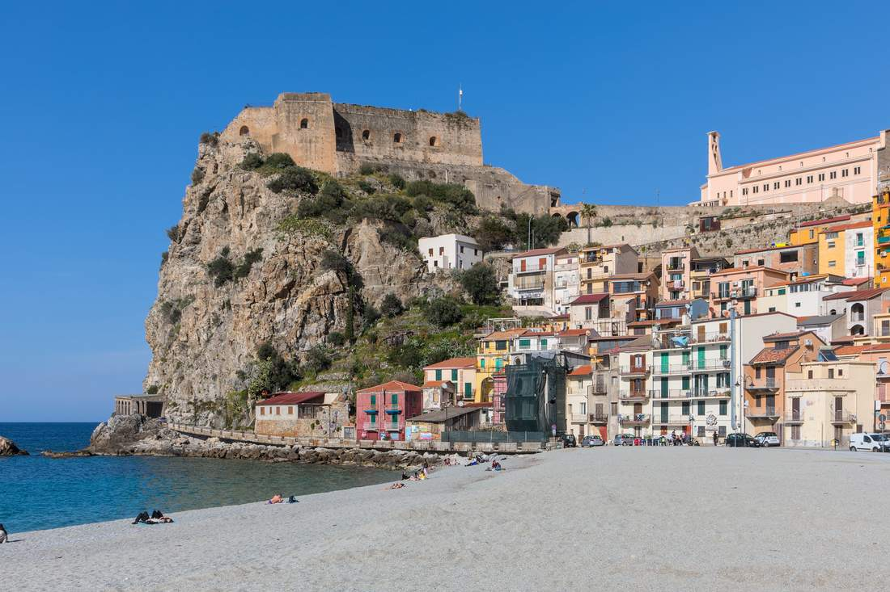
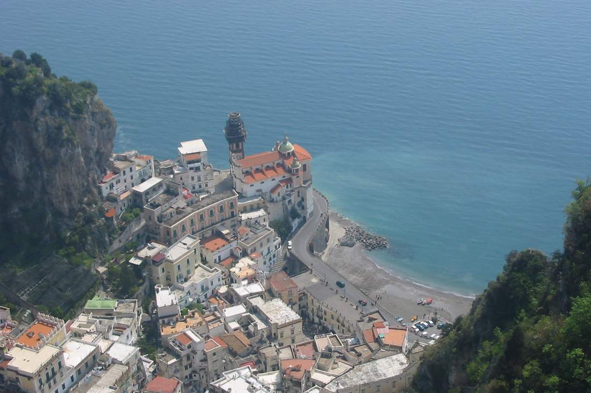
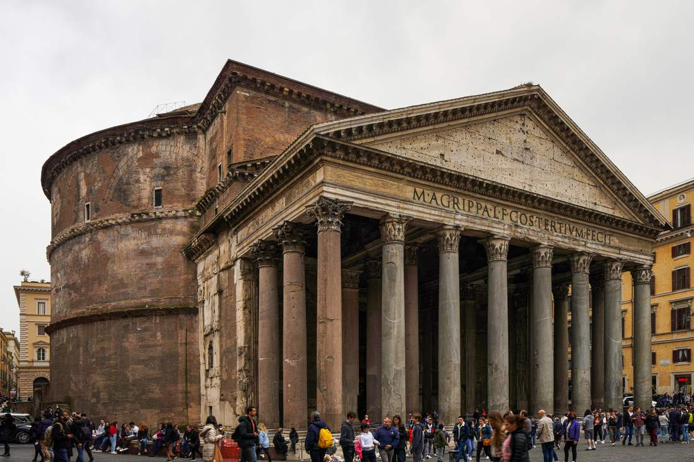
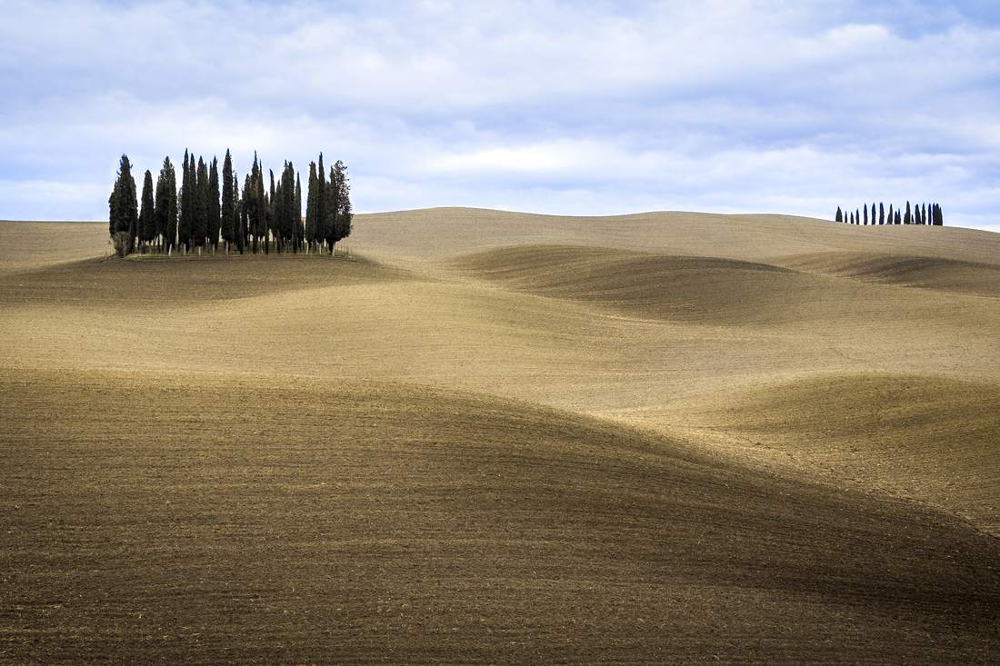
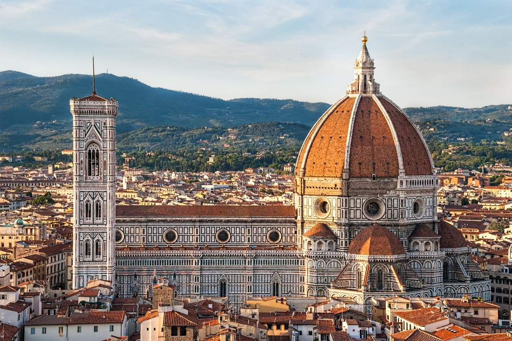
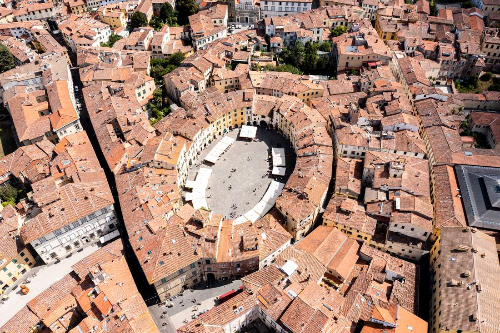
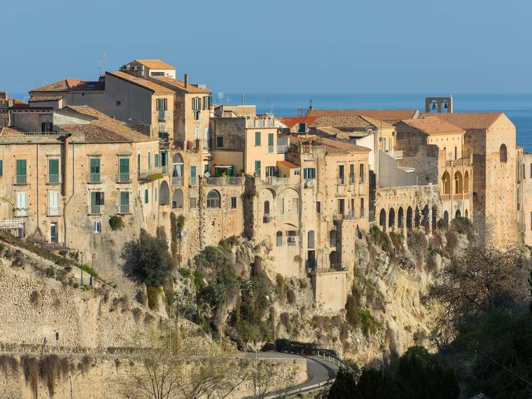

A honeymoon linking both families’ ancestral towns — Palmi in Calabria and Lucca in Tuscany — with the Amalfi Coast, Rome, and the Val d’Orcia countryside in between. Built for romance rather than a monument checklist: slow mornings, sunset terraces, vineyard lunches, and only six hotel check-ins across fifteen nights.
You travel only the scenic stretches by car. At Salerno the first rental is dropped and the Amalfi Coast is reached by ferry; trains quietly link Salerno–Rome, Rome–Orvieto–Chiusi, and Florence–Lucca. Eleven of the fifteen nights are spent on the coast, in the countryside, or in the two family towns — the great cities of Rome and Florence get a light, deliberate touch.
Traveling in April brings the greenest countryside, wildflowers and wisteria, and the lightest crowds and prices — though the sea remains too cold to swim. Confirm coastal hotels, the Salerno–Amalfi ferries, and the boat operators have opened for the season.
Traveling in May is the honeymoon pick: the sea warms to a swimmable 66–70°F, the evenings run long and golden, and the coast is fully in season — book the scarce items (Atrani, the balloon, the private boat) early.
Two ancestral family towns bookend the journey — his in Calabria, hers in Tuscany
One fully unscheduled day built into the Amalfi Coast stay
No one-night stands with your luggage — only six check-ins in fifteen nights
Wine days designed so no one ever drives after tasting
0Days
0Bases · Hotel Check-Ins
0Stops Along the Route
0Open-Jaw Flight
0Hrs Driving (Scenic Only)
0Nights on the Amalfi Coast
The Route
Every stop, connected
Hover a pin to see it highlighted below; click any stop — on the map or in the list — to jump straight to its chapter in the itinerary.
Drive (rental car) Ferry (Salerno ↔ Atrani) Train
Illustrated route shown while the interactive map loads.
Day By Day
Six bases, base by base
Every destination is its own magazine spread. Tap any day to open its morning, afternoon, and evening.
1

Scilla & the Castello Ruffo, Calabria
Calabria · his ancestral coast
Apr 9–11May 7–9
The honeymoon opens in his family’s town: a café-lined piazza, a belvedere sunset, and the first aperitivo of married life — followed by a day given over to Scilla’s fishermen’s quarter and Tropea’s clifftop old town.
Next: ~4.5 hrs to Amalfi Coast Leisurely walking 2 nights
Must-See
Piazza Primo Maggio, Palmi
Monte Sant’Elia belvedere
Tropea’s clifftop old town & Santa Maria dell’Isola
Scilla’s Chianalea quarter
Optional
Family-history visit to the comune / parish archives
Sunset aperitivo cruise from Tropea
Best photo op: the Chianalea houses rising straight from the sea in Scilla, and Tropea’s clifftop view at golden hour.
Fri, Apr 9Fri, May 7Fly Out · overnight to Italy
Overnight flight San Antonio → European hub → Lamezia Terme. Sleep on the plane — Italy tomorrow.
Sat, Apr 10Sat, May 8Arrive Calabria · night 1
Morning
Land at Lamezia Terme, collect Car #1, drive ~1 hr to Palmi.
Afternoon
Settle in; wander the café-lined Piazza Primo Maggio; ask at the comune about family records.
Evening
Sunset from the Monte Sant’Elia belvedere; the first aperitivo of married life.
Sun, Apr 11Sun, May 9Scilla & Tropea · night 2
Morning
Leisurely breakfast, then a short drive to Scilla.
Afternoon
Lunch in the Chianalea fishermen’s quarter, where the houses rise from the water; drive on to Tropea.
Evening
Tropea’s clifftop old town, Santa Maria dell’Isola, a long seafood sunset. April: admire the turquoise from above.May: swim — the water is finally warm.
2

Atrani, five minutes on foot from Amalfi town
Amalfi Coast · Atrani
Apr 12–15May 10–13
Four nights on a sea-view terrace — the longest single stay of the trip, and the one built with real unscheduled time. Arrival is by ferry, not traffic; Ravello’s gardens, a genuinely open day, and a private sunset boat fill the rest.
Long lunch in Maratea’s port and hilltop lanes, the Christ the Redeemer viewpoint; continue on to Salerno and drop Car #1.
Evening
Ferry across to Atrani; terrace dinner as the light fades.
Tue, Apr 13Tue, May 11Ravello · night 4
Morning
Villa Cimbrone’s Terrace of Infinity.
Afternoon
Villa Rufolo gardens; a lazy lunch.
Evening
Stay up in Ravello after the day-trippers leave for a splurge sunset dinner — the most romantic table on the coast.
Wed, Apr 14Wed, May 12The Unscheduled Day · night 5
Morning
Yours — sleep in, or an early ferry to Salerno for Herculaneum.
Afternoon
Herculaneum’s intact villas (or Pompeii, a full day), or the lemon-terrace walk and limoncello tasting above Amalfi town.
Evening
Nothing booked — the terrace, the view, each other.
Thu, Apr 15Thu, May 13On The Sea · night 6
Morning
A late breakfast on the terrace.
Afternoon
Private or small-group sunset boat — swim coves along the coast.
Evening
The Furore Fjord turning gold; a cold bottle onboard.
3

The Pantheon, Rome
Rome · Trastevere & the Aventine
Apr 16–17May 14–15
No marathon of monuments — a rowboat in Villa Borghese, the Pantheon by daylight, and the Aventine Hill’s Orange Garden at sunset, with the Trevi Fountain reserved for after dark.
Next: ~2.5 hrs to Val d’Orcia Easy – moderate walking 2 nights
Must-See
The Pantheon
Villa Borghese gardens
The Aventine Orange Garden & Knights of Malta keyhole
Trevi Fountain, after dark
Optional
Colosseum / Vatican (pre-booked, only if keen)
Rooftop aperitivo
Best photo op: the Knights of Malta keyhole framing St. Peter’s dome, and the Orange Garden at sunset over the Tiber.
Fri, Apr 16Fri, May 14To Rome · night 7
Morning
Ferry or bus back to Salerno.
Afternoon
Frecciarossa to Rome; check in near Trastevere.
Evening
Lantern-lit dinner in Trastevere’s lanes.
Sat, Apr 17Sat, May 15Romantic Rome · night 8
Morning
Villa Borghese gardens; a rowboat on the lake.
Afternoon
The Pantheon, gelato, then the Aventine Hill’s Orange Garden at sunset.
Evening
The Knights of Malta keyhole, the Trevi after dark, a rooftop nightcap.
4

The cypresses of the Val d’Orcia
Val d’Orcia · the agriturismo
Apr 18–20May 16–18
Three nights on a working farm between Montepulciano and Pienza — a sunrise chapel, a thermal soak, wine days built so no one drives after tasting, and a farm dinner under the pergola.
Next: ~2.5 hrs to Florence Leisurely, one early sunrise 3 nights
Must-See
Vino Nobile cellars inside Montepulciano
Pienza’s piazza & pecorino
Bagno Vignoni thermal baths
Cappella della Madonna di Vitaleta at sunrise
Optional
Sunrise hot-air balloon
Hired driver for a Brunello/Montalcino day
Farm dinner at the agriturismo
Best photo op: sunrise at the Vitaleta chapel with the San Quirico cypress groves — the best light of the whole trip.
Sun, Apr 18Sun, May 16Via Orvieto · night 9
Morning
Train Rome → Orvieto; the funicular up the rock.
Afternoon
Orvieto’s cathedral façade, a long lunch; onward train to Chiusi and Car #2.
Evening
Into the hills to the agriturismo; sunset over the vines, dinner in Montepulciano or at the farm.
Mon, Apr 19Mon, May 17Slow Tuscany · night 10
Morning
Pienza — pecorino and the perfect piazza.
Afternoon
A thermal soak at Bagno Vignoni; a long vineyard lunch.
Evening
Golden hour at the Vitaleta chapel and San Quirico cypresses; a farm dinner under the pergola, nowhere to drive.
Tue, Apr 20Tue, May 18Vines & Downtime · night 11
Morning
Optional sunrise hot-air balloon, or a DIY sunrise drive to Vitaleta with cappuccinos in hand.
Afternoon
Wine day, designed so no one drives after tasting: walk the cellars inside Montepulciano, or a hired driver to Montalcino.
Evening
The pool, with nowhere to be.
5

The Duomo, Florence
Florence · Oltrarno
Apr 21–22May 19–20
A single museum, unhurried artisan lanes, and Gregorian vespers at San Miniato al Monte before the walk down to Piazzale Michelangelo for the best sunset in the city — with a three-hour stop in Siena along the way.
Next: ~1 hr 20 to Lucca Moderate – one uphill walk 2 nights
Must-See
Piazza del Campo & the Duomo, Siena
Uffizi or Accademia (pre-booked)
Oltrarno artisan lanes
San Miniato al Monte & Piazzale Michelangelo
Optional
Gregorian-chant vespers, San Miniato al Monte
Rooftop aperitivo over the Arno
Best photo op: Piazzale Michelangelo at sunset, and Siena’s striped Duomo interior.
Wed, Apr 21Wed, May 19Via Siena · night 12
Morning
Depart the agriturismo; drive to Siena.
Afternoon
The Piazza del Campo, the striped Duomo interior, lunch — parked outside the ZTL.
Evening
On to Florence Airport, drop Car #2, tram into town; Oltrarno dinner.
Thu, Apr 22Thu, May 20Florence, Unhurried · night 13
Morning
One museum at your own pace (Uffizi or Accademia, pre-booked).
Afternoon
The Oltrarno artisan lanes; a leisurely lunch.
Evening
Vespers with Gregorian chant at San Miniato al Monte; the walk down to Piazzale Michelangelo for sunset; a rooftop nightcap.
6

Piazza dell’Anfiteatro, Lucca
Lucca · her ancestral city
Apr 23–24May 21–22
The emotional finale: her family’s city, biked at golden hour, closed with a Puccini recital a few streets from where he was born and dinner in the oval Piazza dell’Anfiteatro. Pisa’s Piazza dei Miracoli waits on the way to the airport.
Next: ~30 min to Pisa (fly home) Leisurely — flat walls, easy biking 2 nights
Must-See
The Renaissance city walls
Torre Guinigi
Piazza dell’Anfiteatro
San Giovanni church
Optional
Puccini e la sua Lucca recital
Family-history visit to the comune / parish
An hour at Pisa’s Piazza dei Miracoli en route home
Best photo op: the walls at golden hour, and the oval Piazza dell’Anfiteatro at dusk.
Fri, Apr 23Fri, May 21To Lucca · night 14
Morning
A short train from Florence.
Afternoon
Settle in; bike the Renaissance walls at golden hour.
Evening
Dinner near the oval piazza.
Sat, Apr 24Sat, May 22Lucca · night 15
Morning
Torre Guinigi; a picnic on the walls.
Afternoon
The comune / parish for family history.
Evening
The Puccini e la sua Lucca recital at San Giovanni; dinner in the Piazza dell’Anfiteatro.
April note: these two days fall on Italy’s Liberation Day weekend — expect some ceremonies and closures; your Pisa flight is unaffected.
Sun, Apr 25Sun, May 23Fly Home · via Pisa
Morning
Train to Pisa (~30 min).
Afternoon
If timing allows, an hour at the Piazza dei Miracoli — the Leaning Tower, Duomo, and Baptistery.
Evening
Depart PSA → home.
Where You’ll Stay
Small, local, never a chain
B&Bs, converted convents, and working agriturismi — two choices at every base, one leaning value, one a cozy splurge. Every card links straight to the property on Google Maps.
Calabria — Tropea / Palmi
2 stays

Villa Adua Charming Rooms
★ 4.9 · guest rating
Central Tropea, Calabria
An intimate central B&B with a garden terrace, a short walk to both the beach and the old town.
Why we recommend it: the warmest hosts on the coast, and a garden breakfast that starts the day slowly.
Everything to prepare before departure, gathered in one place.
Weather
April: mild, 55–68°F, the greenest countryside of the year — the sea remains too cold to swim.
May: warm, 62–77°F, sea temperatures 66–70°F — fully swimmable, long golden evenings.
Packing List
Comfortable walking shoes + one dressy pair
A light layer for coastal evenings
Modest coverage for church visits
Swimwear (the sea is ready in May)
Currency
Euro (€). Cards are widely accepted; keep small cash for rural agriturismi, cellar tastings, and gelato.
Tipping
Not obligatory. Rounding up or leaving 5–10% for exceptional service is generous and appreciated.
Transportation
Two small manual rentals for the scenic stretches; Frecciarossa/Italo trains and the Salerno–Amalfi ferry link the rest. Never drive into a town’s ZTL zone.
Passports & Visas
US passport holders enter Italy visa-free for stays under 90 days. Schengen rules require a passport valid 3+ months beyond departure — aim for validity through at least late 2027early 2028, and renew now if it’s close.
Electrical Outlets
Type C/F/L sockets, 230V. A universal adapter is recommended; most modern chargers handle the voltage automatically.
Emergency Numbers
112 for all emergencies nationwide (police, fire, medical). English-speaking operators are generally available.
Internet
An eSIM data plan is recommended for both phones; most B&Bs and agriturismi offer reliable Wi-Fi.
Local Customs
Dinner runs later than in the US (often 8pm+); greet shopkeepers on entering; dress modestly for churches.
Language
Italian. English is widely spoken in tourist areas; a few courtesy phrases go a long way in the family towns.
Budget At A Glance
All-in (flights, lodging, cars, trains, food, experiences): ~$8,150–$12,400 per couple. The optional romantic extras — the balloon, the private boat, a photo shoot, a spa afternoon — add $600–$1,800. Full line-item budget on the Planning page.